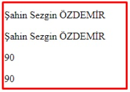
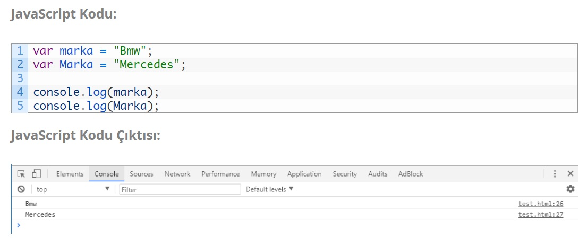

Javascript Yazım Kuralları bazı durumlarda html’e bazı durumlar da ise bir back-end yazılım diline (örn: C#) benzemektedir. Yazılım dünyasında genel olarak bir dilin yazım kurallarına, ‘söz dizimi’ yani orjinal adıyla ‘Syntax’ denmektedir. Bizde bunu en uygun şekilde “Yazım Kuralları” olarak Türkçe’ye çevirmişiz. Bilinmesi gereken şeyleri hiç bir zaman ezberlemenize gerek yok. Doğru ve olması gereken gibi kod yazdığınız da bu kurallar artık sizin için standart bir yazım biçimine dönüşecektir. Yapmanız gereken tek şey, başlangıçta bu zemini iyi oturtabilmektir. Daha önce farklı bir front-end (html, css gibi) veya back-end (c#, java gibi) dili ile uygulama geliştirdiyseniz bu yazılım kuralları ve Javascript Syntax’ı size çok da yabancı gelmeyecektir.
Javascript, html gibi boşluklara duyarsızdır. Yani, yazdığınız bir kod satırında ki bıraktığınız boşluklar yada tanımladığınız bir değişkene atadığınız değer içerisine bıraktığınız boşluklar işlevsizdir. Bunu iki farklı yol ile deniyeceğiz. Birincisi document.write metodu ile ekrana yazarak, diğer ise Google Chrome (F12) JavaScript konsol ekranına yazdırarak göreceğiz..

EKRAN ÇIKTISI :
Üst kısımda yer alanlar document.write() ile web sayfasına yazdırdığımız yazılar, alttaki ise console.log() ile Google Chrome console ekranına yazdırdığımız gene aynı değişkenler. Yukarıdaki örnek de görüldüğü gibi değişken tanımlarken bıraktığınız boşluklar document.write() için önemsiz fakat console.log() tarafından algılanmaktadır.
Javascript yazılım dilinde küçük ve büyük harf birbirinden farklı olarak algılanmaktadır. Tıpkı C# Dilinde olduğu gibi aynı özellik Javascript dilinde de vardır. Yani küçük “m” harfi ile büyük “M” harfi JavaScript’in gözünde farklıdır. Aşağıda ki örnekle bunu görebiliriz.
JavaScript Yazım Kuralları ‘nda bu konuda herhangi bir kural söz konusu değildir. Yani isterseniz tek tırnak isterseniz de çift tırnak kullanabilirsiniz. Dikkat etmeniz
gereken tek nokta “Tutarlı Olmak”.. Yani, String bir değişken tanımlarken çift tırnak ile başladıysanız çift tırnak ile bitirin. Yada aynısı tek tırnak için de geçerli.
Bazı özel durumlarda olay biraz daha farklı. Örneğin JavaScript tek & çift tırnak kuralına bakmaz iken, bir JavaScript kütüphanesi olan jQuery ,
string ifadelerin kesinlikle “çift tırnak” ile yazılmasını beklemektedir..
Örnekte de görüldüğü gibi benzer değişkenler hem tek hemde çift tırnak ile tanımlanmıştır. console.log() metodu ile ekrana yazdırdığımız da aynı sonuçları görürüz.
Bazı karakterler JavaScript tarafından farklı anlamlara geldiği için onları direk kod blokları içerisinde kullanamayız. Örneğin normal şartlar da çift tırnak işaretini (” “)
işaretini string ifade tanımlamak için kullanıyoruz aslında orada çift tırnak kullanımı zorunlu ve bunu string ifadenin başlangıcı ve bitişi olarak kabul etmektedir.
O halde ben
string bir ifade içerisinde bir kelimeyi çift tırnak içerisinde yazmak istersem hata alırım.
Ama kullanacağımız özel bir ayıraç sayesinde bu durumu kolayca çözebilir. Ters Slash işareti ile bu sorunu rahatça aşabiliriz.
JavaScript kendi alt yapısını oluştururken bazı kelimeleri bazı kalıplar için kullanmıştır. Bunlara “JavaScript Rezerve Kelimeleri” veya “Ayrılmış Kelimeler” adını vermiştir.
Orjinali ise başlıkta kullandığım “Reserved Words” tanımıdır. Peki bu hususta bizi ilgilendiren konu ne? Değişken, fonksiyon, metot veya yeni bir nesne tanımlarken, tanımladığımız
bu nesnelere kesinlikle bu isimleri veremeyiz.
Yani JavaScript’de döngüler için kullanılan “for”, “while” veya değişken isimleri “var”, “int” gibi kalıplaşmış ve farklı işlevleri
olan
kelimeler, kesinlikle yeni tanımladığınız bir
nesnede olmaması lazım. Zaten JavaScript’i az da olsa öğrendiğinizde ihtiyacınız kalmayacak fakat tam listeyi ben gene sizlerle paylaşıyorum.